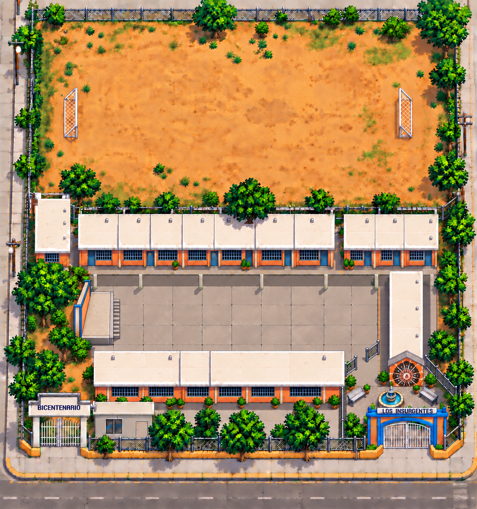

ESCUELA PRIMARIA
La aventura del saber
Cargando tu escuela
Enter / START · ComenzarXbox 360: joystick · Caminar | A · Acción
DIRECTOR JOSÉ GUADALUPE
Todos los días: uniforme fajado, cabello limpio y peinado. Zapatos negros o tenis blancos según corresponda.
A, B o Escape para volver. En la bienvenida, pulsa X o U para consultar la guía.
A, Espacio o E para lanzar. Gana el trompo que gira más tiempo.
Tómate tu tiempo. Puedes volver a intentarlo.

Consigue una estrella en cada lugar. Puedes hacerlo en el orden que prefieras.
Busca a Oliver frente a los salones para retarlo al trompo en la explanada.
En computadora: flechas o WASD para caminar, E para actuar y Shift para correr. En teléfono: cruceta y A.
Xbox 360: joystick o cruceta para caminar; A para actuar; B para correr o cerrar; X / START para abrir el mapa; Y para sonido. En los retos, elige con la cruceta y confirma con A.
Cambia las etiquetas de los edificios y los grupos de los profes. Guarda una copia o actualiza los archivos del juego.
Cambian con el día de Nuevo Laredo. Puedes elegir otro día para ver su uniforme. El fin de semana conservan el de viernes.
Acércate a los alumnos y al personal para ver sus nombres.
TU ESCUELA, A TU MANERA
Elige grado y grupo para un salón, o escribe el nombre del espacio.
Elige grado y grupo. También puedes escribir una materia, varios grupos o un cargo.
Exporta las etiquetas y los grupos. Importa ese archivo para usarlos en otro navegador.
Vuelve a cargar los archivos más recientes. Tus etiquetas y grupos se conservan; el juego vuelve a la portada.
Los ajustes se guardan en este navegador. Una copia exportada te permite recuperarlos si borras los datos del navegador.
RETO COMPLETADO
Exploraste tu escuela y superaste los retos de sumas, lectura y números.